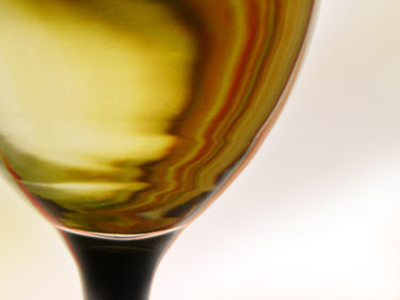
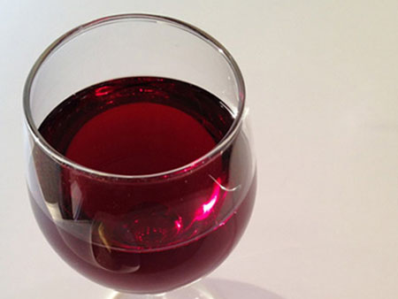
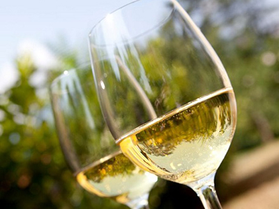
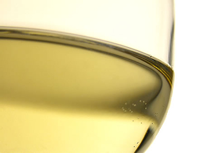
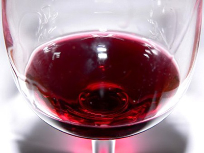

The Dove Farms Syrah mixes powerful berry aromas with classic structural elements. With just a hint of spice, the Syrah is a good complement to Mediterranean dishes. $32.00Add to Cart

2003 Chardonnay
The Dove Farms Chardonnay is a complex white wine with fresh flavors and a crisp dry acidity provided by aging in oak barrels. A palette pleaser to be enjoyed with pork, poultry, or fish. $21.00Add to Cart

2002 Cabernet Sauvignon
Layered and smooth, the Dove Farms Cabernet Sauvignon is a distinctive wine. Anderson Valley grapes entice the palette with lush flavors of chocolate and fruit and textures of soft, velvet tannins. $22.00Add to Cart

2012 Chenin Blanc
The Dove Farms Chenin Blanc is a semi-sweet wine with a fruity and lively character. Slightly floral yet crisp on the palette, it is aged in oak barrels for a dry finish. $19.50Add to Cart

2003 Sauvignon Blanc
Floral and citrus aromas combine with fig, melon, and grapefruit flavors in the crisp, refreshing Dove Farms Sauvignon Blanc. An excellent accompaniment to poultry, fish, or seafood. $22.00Add to Cart

2001 Merlot Reserve
Dove Farms' classic Merlot Reserve wine is bursting with black cherry flavors. Full-bodied, fruity, and long on the finish, it has a ruby color and a complex aroma with notes of vanilla and wood bark. $20.00Add to Cart